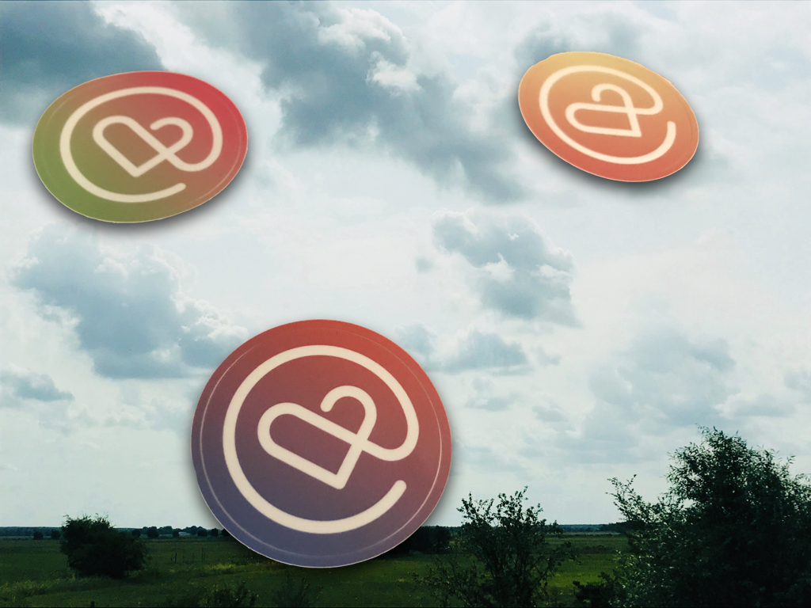

Community with lots of heart
Aug 16, 2019 00:38 · 558 words · 3 minutes read

It’s been two weeks now since Heart of Clojure. Time for reflections. 🌟
I feel much movement within, a sense of wonder, a pinch of surprise and a big portion of gratitude. It was a special conference for me.
The Background Story
A while ago, I made a promise to myself. I decided to accept every possibility to speak in front of people. In the past, having all attention on me was one of the most frightening moments. I had mastered the skill of avoiding it at any cost.
It all changed when I realised that I wanted to be able to speak to groups of people. I wanted to be heard, I wanted to share and contribute in my own way. Again and again, I attempted to lean into the edge of my discomfort to overcome this fear.
When I was asked to be one of two presenters for Heart of Clojure, I was shocked and speechless. My inner critic started rumbling: Why would they ask me? I don’t have any experience in this. I don’t think I can do this. Deep breath. It’s okay. I realised that I couldn’t have wished for a better environment for my first moderating experience.
The Clojure Community
Over the last couple of years, the Clojure community has become an invaluable part of my life. It’s a space where all of me has been welcomed and accepted, since day one. The kindness, support and inspiration I have received from people in the community is boundless. My heart has been touched many times by the deep and genuine connections, old ones keep growing, new ones emerging. Whenever I started walking down the road of doubts, someone was there to pull me out of it and reflect back what I couldn’t see when the mental fog of my inner critic was getting denser and denser.
I am well aware that my approach to life is somewhat different from those of most people in tech. Yet, there hasn’t been a word of judgement towards me from any person in the community. Instead, I keep having animating conversations where I get to share from my experiences and learn from those of others.
Heart Moments at Heart of Clojure
It was fun starting the day together with familiar and new faces at the hotel breakfast. I learned how to enjoy speaking in front of people. I sang karaoke on stage. Twice. I jumped into several situations I would usually avoid (with great success 💃). I got hugely inspired by talks about creative coding, global warming and tech, the demystification of compilers, empathy, open source, the importance of community, resilient applications and much more. I initiated a movement break to connect us to our bodies and a dyad meditation session that connected us to ourselves and each other. I fell in love with people, ideas, the city of Leuven and the Clojure community all over again.

Thank you Bozhidar for being such an amazing co-host. Thank you Arne and Martin for all the energy and heart you have put into this conference. Heart of Clojure has been a tangible example for the power of intentions and how far they spread. Thank you to all the speakers for sharing your ideas with us. And a huge thank you to everybody who participated and contributed in their own way.